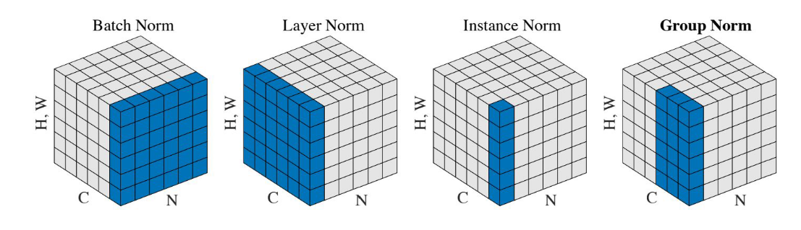

深度学习中各种Normalization
写在前面
本文是一些文章的总结，大量借鉴了其他博主的文章，因此先将其他人的文章链接给出：
为什么需要Normalization
独立同分布与白化
独立同分布并非所有机器学习模型的必然要求（比如Naive Bayes模型就建立在特征彼此独立的基础之上，而Logistic Regression和神经网络则在非独立的特征数据上依然可以训练出很好的模型），但独立同分布的数据可以简化常规机器学习模型的训练，提升机器学习模型的预测能力，这已经是一个共识了。
在把数据喂给机器学习模型之前，白化（whitening）是一个重要的数据预处理步骤，白化一般包含两个目的：
- 去除特征之间的相关性——独立；
- 使得所有特征具有相同的均值和方差——同分布
白化最经典的方法就是PCA。
深度学习中的Internal Covariate Shift
深度神经网络模型的训练为什么会很困难？其中一个重要的原因是，深度神经网络涉及到很多层的叠加，而每一层的参数更新会导致上一层输入数据分布发生变化，通过层层叠加，高层的输入分布会非常剧烈，这就使得高层需要不断去重新适应底层的参数更新。Google将这一现象总结为内部协变量转换(Internal Covariate Shift, ICS)。
在统计机器学习中的一个经典假设是源空间和目标空间的数据分布是一致的。如果不一致，那就会出现新的机器学习问题，如transfer learning、domain adaptation等。
而covariate shift就是分布不一致假设之下的一个分支问题，它是指源空间和目标空间的条件概率是一致的，但其边缘概率不同，即：对所有$$x \in X$$
$$P_s(Y \vert X=x) = P_t (Y \vert X=x)$$
但是$$P_s(X) \ne P_t(X)$$，对于神经网络的各层输出，由于他们经过了层内操作作用，各层的输入信号的分布显然不同，而且差异会随着网络深度增大而增大，可是他们所能”指示”的样本标记(label)仍然是不变的，这便符合了covariate shift的定义。
简而言之，每个神经元的输入数据不再是”独立同分布”
- 上层参数需要不断适应新的输入数据分布，降低了学习速度
- 下层输入的变化可能趋向于变大或者变小，导致上层落入饱和区，使得学习过早停止
- 每层的更新都会影响到其他层，因此每层的参数更新策略需要尽可能谨慎
Normalization的通用框架与主流方法
以神经网络中的一个普通神经元为例。神经元接收一组输入向量$$x=(x_1, x_2, \cdots, x_d)$$通过某种运算后，输出一个标量值：
$$y=f(x)$$
由于ICS问题的存在，$$x$$的分布可能相差很大。要解决独立同分布的问题，“理论正确”的方法就是对每一层的数据都进行白化操作。然而标准的白化操作代价高昂，特别是我们还希望白化操作是可微的，保证白化操作可以通过反向传播来更新梯度。
因此，以BN为代表的Normalization方法退而求其次，进行了简化的白化操作。基本思想是：在将$$x$$送给神经元之前，先对其做平移和伸缩变换， 将$$x$$的分布规范化成在固定区间范围的标准分布。
通用变换框架就如下所示：
$$h=f\left(g\cdot\frac{x-\mu}{\sigma}+b\right)$$
这个公式中的各个参数：
$$\mu$$是平移参数（shift parameter），$$\sigma$$是缩放参数（scale parameter）。通过这两个参数进行shift和scale变换：$$\hat{x}=\frac{x-\mu}{\sigma}$$得到的数据符合均值为0、方差为1的标准分布。
$$b$$是再平移参数（re-shift parameter），$$g$$是再缩放参数（re-scale parameter）。将上一步得到的$$\hat{x}$$进一步变换为：$$y=g \cdot \hat{x} + b$$。
最终得到的数据符合均值为$$b$$、方差为$$g^2$$的分布。
各种各样的Normalization

从左到右一次是BN、LN、IN、GN。深度网络中的数据维度一般是[N, C, H, W]或者[N, H, W，C]格式，N是batch size，H/W是feature的高/宽，C是feature的channel，压缩H/W至一个维度，其三维的表示如上图！
四种Normalization的工作方式：
- BN主要在Batch的维度上Norm，归一化维度为$$N \times H \times W$$，对batch中对应的channel归一化；
- LN避开了batch维度，归一化的维度为$$C \times H \times W$$；
- IN归一化的维度为$$H \times W$$；
- 而GN介于LN与IN之间，其首先将channel分为许多组（group）,对每一组做归一化，及先将feature的维度由[N,C,H,W]reshape为[N,G,C//G,H,W]，归一化的维度为$$C//G \times H \times W$$。
Batch Normalization
Batch Normalization于2015年由Google提出，开Normalization之先河。其规范化针对单个神经元进行，利用网络训练时一个mini-batch的数据来计算该神经元$$x_i$$的均值和方差,因而称为Batch Normalization。
$$\mu_i = \frac{1}{M} \sum{x_i}, \sigma_i= \sqrt{\frac{1}{M} \sum{(x_i - \mu_i)^2} + \epsilon}$$
其中$$M$$是mini-batch的大小。
BN是在batch这个维度上的Normalization，但是这个维度并不是固定不变的，比如训练和测试时一般不一样，一般都是训练的时候在训练集上通过滑动平均，预先计算好均值mean和方差variance,在测试的时候不再计算这些值，而是直接调用这些预先计算好的平均mean和方差variance参数。但是，当训练数据和测试数据分布有差别时，训练时预计算好的数据并不能代表测试数据，这就导致在训练、验证、测试这三个阶段存在inconsistency。
此外过小的batchsize会导致其性能下降，一般来说每GPU上batch设为32最合适，但是对于一些其他深度学习任务batchsize往往只有1-2，比如目标检测、图像分割、视频分类上，输入的图像数据很大，较大的batchsize显存吃不消。
明确了问题，解决时就考虑在归一化的时候避开batch这个维度是不是可行呢，于是就出现了layer normalization和instance normalization等工作。
Layer Normalization
$$\mu = \sum_i{x_i}, \sigma= \sqrt{\sum_i{(x_i-\mu)^2}+\epsilon}$$
其中$$i$$枚举了该层所有的输入神经元。对应到标准公式中，四大参数$$\mu$$、$$\sigma$$、$$g$$、$$b$$均为标量（BN中是向量），所有输入共享一个规范化变换。
LN针对单个训练样本进行，不依赖于其他数据，因此可以避免BN中受mini-batch数据分布影响问题，可以用于小mini-batch场景、动态网络场景和RNN，特别是自然语言处理领域。此外，LN不需要保存mini-batch的均值和方差，节省了额外的存储空间
但是，BN的转换是针对单个神经元可训练的——不同神经元的输入经过再平移和再放缩后分布在不同的区间，而LN对于一整层的神经元训练得到同一个转换——所有的输入都在同一个区间范围内。如果不同输入特征不属于相似的类别(比如颜色和大小)，那么LN的处理可能会降低模型的表达能力。
Instance Normalization
在GAN和style transfer的任务中，目前的IN要好于BN，IN主要用于对单张图像的数据做处理，而BN主要对Batch的数据做处理。由于BN在训练时每个batch的均值和方差会由于shuffle都会改变,所以可以理解为一种数据增强，而IN可以理解为对数据做一个归一化的操作。
换句话说，BN的计算是要受其他样本影响的，由于每个batch的均值和标准差不稳定，对于单个数据而言，相对于是引入了噪声，但在分类这种问题上，结果和数据的整体分布有关系，因此需要通过BN获得数据的整体分布。而IN的信息都是来自于图片自身，相当于对全局信息做了一次整合和调整，在图像转换这种问题上，BN获得的整体信息不会带来任何收益，带来的噪声反而会弱化实例之间的独立性：这类生成式方法每张图片自己的风格比较独立不应该与batch中其他的样本产生太大联系。
Group Normalization
group normalization优化了BN在较小的mini-batch情况下表现不太好的劣质。批量维度进行归一化会带来一些问题——批量统计估算不准确导致批量变小时，BN的误差会迅速增加。在训练大型网络和将特征转移到计算机视觉任务中(包括检测、分割和视频)，内存消耗限制了只能使用小批量的BN。事实上，GN的极端情况就是LN和IN
在深度学习没有火起来之前，提取特征通常是使用SIFT、HOG和GIST特征，这些特征有一个共性，都具有按group表示的特性，每一个group由相同种类直方图的构建而成，这些特征通常是对在每个直方图（histogram）或每个方向（orientation）上进行组归一化（group-wise norm）而得到。
从深度学习上来讲，完全可以认为卷积提取的特征是一种非结构化的特征或者向量，拿网络的第一层卷积为例，卷积层中的的卷积核filter1和此卷积核的其他经过transform过的版本filter2（transform可以是horizontal flipping等），在同一张图像上学习到的特征应该是具有相同的分布，那么，具有相同的特征可以被分到同一个group中，按照个人理解，每一层有很多的卷积核，这些核学习到的特征并不完全是独立的，某些特征具有相同的分布，因此可以被group。
Weight Normalization
前面我们讲的模型框架$$h=f\left(g\cdot\frac{x-\mu}{\sigma}+b\right)$$中，经过规范化之后的$$y$$作为输入送到下一个神经元，应用以$$w$$为参数的$$f_w(\cdot)$$函数定义的变换。最普遍的变换是线性变换，即
$$f_w(x)=w \cdot x$$
BN和LN均将规范化应用于输入的特征数据$$x$$，而WN则另辟蹊径，将规范化应用于线性变换函数的权重$$w$$，这就是WN名称的来源。具体而言，WN 提出的方案是，将权重向量$$w$$两部分：
$${w} = g \cdot \hat{v} = g \cdot \frac{v}{\vert \vert v \vert \vert}$$
其中$$v$$，因此这一权重分解的方式将权重向量的欧氏范数进行了固定，从而实现了正则化的效果。
乍一看，这一方法似乎脱离了我们前文所讲的通用框架？
并没有。其实从最终实现的效果来看，异曲同工。我们来推导一下看。
$$f_w(WN(x))=w\cdot WN(x) = g\cdot\frac{v}{\vert \vert v \vert \vert} \cdot x \= v\cdot g\cdot\frac{x}{\vert \vert v \vert \vert}=f_v(g\cdot\frac{x}{\vert \vert v \vert \vert})$$
对照一下前述框架：
$$h=f\left(g\cdot\frac{x-\mu}{\sigma}+b\right)$$
我们只需令：
$$\sigma = { \vert \vert v \vert \vert}, \mu=0, b=0$$
就完美地对号入座了！
回忆一下，BN和LN是用输入的特征数据的方差对输入数据进行scale，而WN则是用神经元的权重的欧氏范式对输入数据进行scale。虽然在原始方法中分别进行的是特征数据规范化和参数的规范化，但本质上都实现了对数据的规范化，只是用于 scale 的参数来源不同。
另外，我们看到这里的规范化只是对数据进行了scale，而没有进行shift，因为我们简单地令$$\mu=0$$。
WN的规范化不直接使用输入数据的统计量，因此避免了BN过于依赖mini-batch的不足，以及LN每层唯一转换器的限制，同时也可以用于动态网络结构。
Cosine Normalization
我们要对数据进行规范化的原因，是数据经过神经网络的计算之后可能会变得很大，导致数据分布的方差爆炸，而这一问题的根源就是我们的计算方式——点积，权重向量$$w$$和特征数据向量$$x$$的点积。
我们知道向量点积是衡量两个向量相似度的方法之一。哪还有没有其他的相似度衡量方法呢？夹角余弦就是其中之一啊！而且关键的是，夹角余弦是有确定界的啊，$$[-1, 1]$$的取值范围。
Cosine Normalization不处理权重向量$$w$$，也不处理特征数据向量$$x$$，就改了一下线性变换的函数：
$$f_w(x) = \cos \theta = \frac{w \cdot x}{\vert \vert w \vert \vert \cdot \vert \vert x \vert \vert}$$
其中$$\theta$$是$$w$$和$$x$$的夹角，所有的数据就都是$$[-1, 1]$$区间范围之内的了！
CN通过用余弦计算代替内积计算实现了规范化。原始的内积计算，其几何意义是输入向量在权重向量上的投影，既包含二者的夹角信息，也包含两个向量的scale信息。去掉scale信息，可能导致表达能力的下降，因此也引起了一些争议和讨论。具体效果如何，可能需要在特定的场景下深入实验。